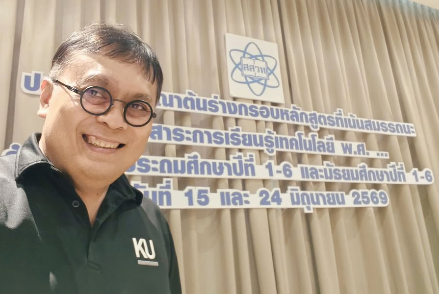

หลักสูตรเทคโนโลยีก็เหมือนผัดไทย
{kind=link}

ในการร่วมพิจารณาต้นร่างหลักสูตรเทคโนโลยีของ สสวท. รายละเอียดของงานไม่สามารถเปิดเผยได้เพราะมี NDA แต่แนวคิดทั่วไปของการออกแบบหลักสูตรอธิบายได้ด้วยอาหารจานหนึ่งที่ทุกคนคุ้นเคย — ผัดไทย
ผัดไทยแต่ละร้านมีส่วนประกอบหลักคล้ายกัน แต่รสชาติ ราคา รูปแบบ และความเหมาะสมกับคนแต่ละกลุ่มไม่เหมือนกัน หลักสูตรก็เช่นเดียวกัน
มีส่วนประกอบครบ ไม่ได้แปลว่าดีเหมือนกัน
ผัดไทยอาจมีเส้น ถั่วงอก และซอสเปรี้ยวหวานเหมือนกัน บางร้านห่อไข่ ใส่กุ้ง โรยถั่วมาก ทำแบบดั้งเดิม หรือปรับให้ร่วมสมัย ทั้งหมดยังเรียกว่าผัดไทยได้
หลักสูตรก็อาจมีเนื้อหาและองค์ประกอบพื้นฐานครบมากน้อยต่างกัน เน้นคนละจุด และยังเรียกว่าหลักสูตรได้เหมือนกัน แต่ความครบถ้วนตามรายการตรวจสอบไม่ได้รับประกันคุณภาพของประสบการณ์เรียนรู้
หลักสูตรต้องตอบบริบท ไม่ใช่สูตรเดียวสำหรับทุกคน
บางวันเราอยากกินแบบหรูหรา บางวันต้องการแบบสุขภาพดี และบางวันต้องการอาหารง่าย ๆ ที่คุ้มราคา การเลือกที่เหมาะจึงขึ้นกับคน เวลา เป้าหมาย ทรัพยากร และข้อจำกัด
การออกแบบหลักสูตรต้องถามเช่นเดียวกันว่า ผู้เรียนคือใคร ต้องใช้ความสามารถนี้ในบริบทใด มีเวลาและทรัพยากรเท่าไร และอะไรคือหลักฐานว่าการเรียนรู้เกิดขึ้นจริง การนำองค์ประกอบมาตรฐานมาใส่ครบโดยไม่ตอบคำถามเหล่านี้ อาจได้หลักสูตรที่ดูถูกต้องแต่ใช้ไม่ได้
ผู้เรียนต้องมีสิทธิเลือกว่าจะใช้เทคโนโลยีหรือไม่
ข้อสังเกตที่สำคัญที่สุดคือ บางสถานการณ์เราอาจไม่จำเป็นต้องกินผัดไทยเลย การเรียนเทคโนโลยีก็ไม่ควรทำให้ผู้เรียนเชื่อว่าเทคโนโลยีเป็นคำตอบอัตโนมัติของทุกปัญหา
ความสามารถในการตัดสินว่าเมื่อใดควรใช้เครื่องมือใด เมื่อใดควรออกแบบใหม่ และเมื่อใดวิธีที่ไม่ใช้เทคโนโลยีเหมาะสมกว่า เป็นส่วนหนึ่งของความรู้เท่าทันเทคโนโลยี ไม่ใช่การต่อต้านเทคโนโลยี
จาก “รู้จักและใช้เป็น” สู่ “คิด ประเมิน เลือก ทำ และทำเป็น”
เป้าหมายของหลักสูตรเทคโนโลยีจึงไม่ควรหยุดที่การรู้จักเครื่องมือหรือทำตามขั้นตอนได้ ผู้เรียนต้องวิเคราะห์ปัญหา ประเมินผลกระทบ เปรียบเทียบทางเลือก ลงมือสร้าง ตรวจสอบผล และปรับปรุงงานจากหลักฐาน
การ “ทำได้” อาจหมายถึงทำตามตัวอย่างสำเร็จ แต่การ “ทำเป็น” รวมถึงการเข้าใจเหตุผล เลือกวิธี รับมือข้อผิดพลาด และรับผิดชอบต่อผลที่เกิดขึ้นกับตนเองและผู้อื่น
หลักสูตรที่ดีสร้างอำนาจในการกำหนดอนาคต
เมื่อผู้เรียนคิดเป็น ประเมินเป็น และเลือกเป็น เขาจะไม่ถูกเทคโนโลยีควบคุม แต่เป็นฝ่ายใช้เทคโนโลยีเพื่อควบคุมและสร้างอนาคตของตนเอง
หลักสูตรจึงไม่ใช่เพียงรายการเนื้อหาที่ต้องครอบคลุม แต่เป็นการออกแบบเงื่อนไขให้ผู้เรียนมีวิจารณญาณ ความสามารถในการลงมือทำ และอำนาจตัดสินใจอย่างรับผิดชอบในโลกที่เทคโนโลยีเปลี่ยนเร็ว
บทความที่เกี่ยวข้อง Foundation Commons: โรงงานฐานความรู้ จากรายวิชาและรายการเนื้อหา สู่ระบบที่รับผิดชอบความรู้ แล็บ การประเมิน และหลักฐานความพร้อมสำหรับโจทย์จริง